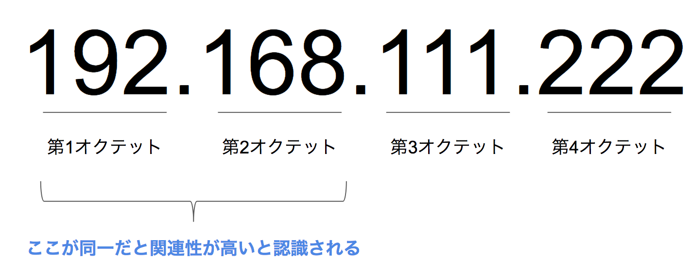
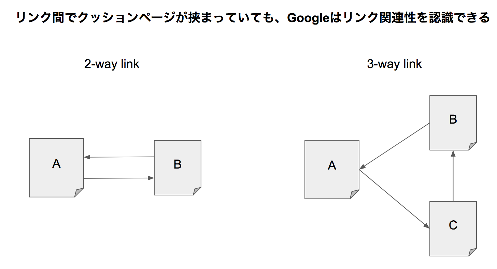
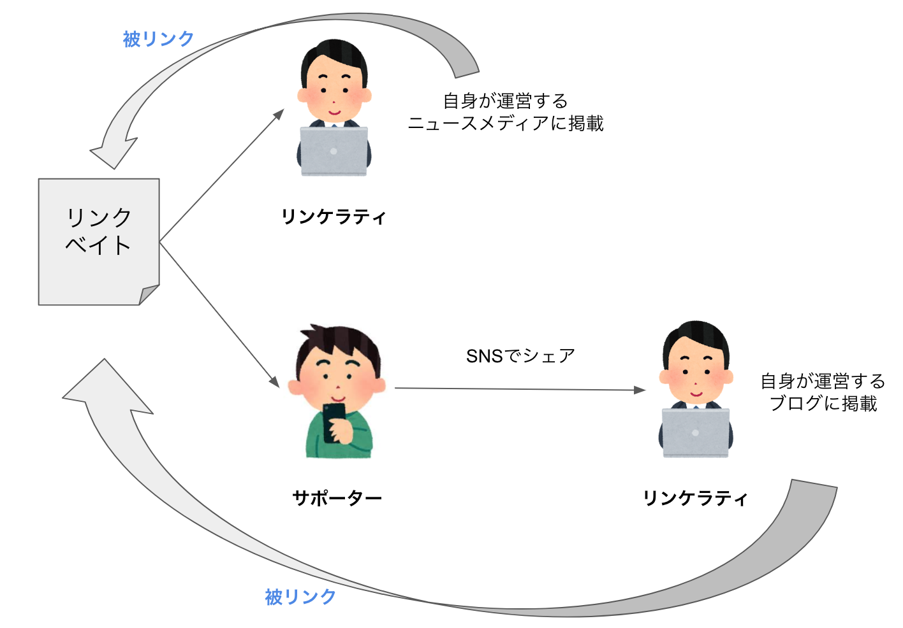

ブランドSEO
ブランド：指名検索、外部評価の指標、被リンクの評価要素、リンクビルディングの手法、SNSでのリンク獲得、レビュー・サイテーション
実践：コントローラブルな被リンクの獲得方法
被リンクの獲得は「運任せ」に見られがちですが、明日からでも取り組めるコントローラブルな方法もあります。作り手の観点で整理すると、次の3つに分けられます。
| 作り手 | リンク元サイト | コントロール性 |
|---|---|---|
| 自作 | 自社コーポレートサイト | コントローラブル |
| 自作 | サテライトサイト | コントローラブル |
| 他作 | 他サイト | アンコントローラブル |
①自社コーポレートサイトからのリンク
自社のコーポレートサイトからサービスサイトへのリンクは、被リンク効果に加えて、運営者情報を検索エンジンに伝え、信頼性を高めることにもつながります。サイドバーやフッターにリンクを置くだけでなく、サービス紹介ページや関連ニュース記事など、メインコンテンツ内で言及するページを用意することが望ましいとされています。
②サテライトサイトからのリンク
サテライトサイト
自社サイトと関連するが異なるテーマ・コンテンツを扱う、別の自社サイト。本サイトと競合しない切り口でユーザーを集め、価値あるコンテンツとして本サイトを紹介する運用が想定されています。
サテライトサイトを運用する際は、次の2点に注意が必要です。
- 関連性の高いサイトからの被リンク効果には上限がある：リンク構造・トラフィック・ドメイン名・IPアドレスなどから見て関連性が高いと判断されるサイト同士は、被リンクの評価に一定の上限が設けられると考えられています
- リンク獲得だけを目的にしたサテライトサイトはペナルティ対象になりうる：Googleのマット・カッツ氏も「関連する2サイトをリンクすること自体は問題ないが、大量のサイト同士でリンクさせるのは問題」と述べています
Googleは、被リンクの多くがトップページに集中している、アンカーテキストの形式が同じ、サイトタイプが同じ、といった「分散性のないリンク構造」を人工的なリンクビルディングのシグナルとして監視しているとされています。自然な被リンクは分散する傾向にあるという前提を踏まえ、多数のサテライトサイトに労力を分散するより、本サイト自体の価値向上に注力する方が望ましいと考えられます。


③他サイトからのリンク（リンクベイト）
他社からの被リンクはアンコントローラブルな要因が多いものの、「どうすれば自社メディアを他社に紹介してもらえるか」という企画の視点で取り組めます。こうしたリンクされやすい記事をリンクベイトと呼びます。

リンクベイト（Link Bait）
他サイトからのリンクを呼び寄せる「餌」となるコンテンツ企画。Baitは英語で「餌」の意味。
リンケラティ（Linkerati）
ブロガーやWebメディアの記者・執筆者など、実際にリンクを張れる立場にあるユーザー層。ソーシャルメディア利用者やオフラインの口コミ伝搬者は、リンケラティに記事の存在を伝えるサポーターの役割を担います。
| カテゴリ | 内容の例 |
|---|---|
| まとめ記事 | 「〇〇に関する〇個のまとめ」のような網羅型記事、インフォグラフィックス |
| 一次情報記事 | 「〇年度の内定率調査結果」のような、自社で実施したアンケート等の一次情報 |
| 流行記事 | 「速報！〇〇の謎解明」のような、鮮度が求められるニュース系の紹介・分析 |
| ユーモア記事 | 写真や動画などを使った、思わず紹介したくなるユーモアのある記事 |
| 煽り記事 | 固定観念を覆すような切り口の記事 |
特に、ユーザーや顧客へのアンケートなどによる一次情報の作成は、リンクベイトとして有効とされています。定量的な統計データは他の記事に引用されやすく、プレスリリース配信サービスなどを通じて拡散させることも有効です。
リンク獲得のみを目的とした虚偽の情報（フェイクニュース）の発信は、SEO的にも社会的にも避けるべきです。Googleはフェイクニュースの検索順位を下げるアルゴリズムを導入しており、SNS各社も同様の対応を進めているとされています。